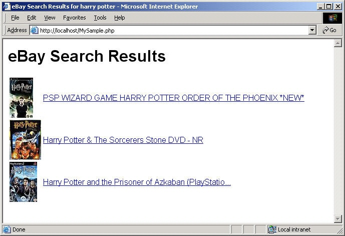

This tutorial shows how easy it is to use the eBay Finding API. The tutorial shows you how to build a simple JavaScript application that submits a findItemsByKeywords call to search for eBay listings based on a keyword query. The code constructs a URL-format HTTP GET call that returns the results in JSON callback format. The code parses the response and constructs a simple HTML page that shows the results of the search.
When you complete the tutorial, you'll have an application that looks like this when it runs:

For notes about the tutorial, additional resources, and suggestions for next steps, please see Notes and Next Steps.
This tutorial contains the following sections:
The completed code is provided as a downloadable ZIP file, GettingStarted_JS_NV_JSON.zip. You must replace instances of "MyAppID" in the tutorial code with your production AppID.
There are a few prerequisites for completing this tutorial:
Joining is free and you get 5,000 API calls a day just for joining! When you generate your application keys from your My Account page, note your Production AppID so you can substitute it in this tutorial where it says "MyAppID." This tutorial uses production data.
Apache HTTP Server is a popular web server, capable of running JavaScript applications. Apache is easy to install and configure. The steps in this tutorial are written with the assumption you are using Apache. JavaScript is, however, compatible with most popular servers, so Apache is not strictly required. The tutorial code should run on any web server configured to support JavaScript.
This step sets up the basic JavaScript code to construct the API request and the HTML code for displaying the results.
To create the initial code for your Finding API call:
Save the file as MySample.html in the DocumentRoot directory of your Apache installation (e.g., C:\Program Files\Apache Software Foundation\Apache2.2\htdocs). The file includes the JavaScript container (<script> ... </script>) where you'll add the code to make an API request and parse the response. It also includes the basic HTML code for the page.
<html>
<head>
<title>eBay Search Results</title>
<style type="text/css">body { font-family: arial,sans-serif;} </style>
</head>
<body>
<h1>eBay Search Results</h1>
<script>
</script>
</body>
</html>
| Standard Parameter | Sample value | Description |
|---|---|---|
| OPERATION-NAME | findItemsByKeywords | The name of the call you are using. This is hard-coded to findItemsByKeywords in the following step. |
| SERVICE-VERSION | 1.0.0 | The API version your application supports. |
| SECURITY-APPNAME | MyAppID | The AppID you obtain by joining the eBay Developers Program. |
| GLOBAL-ID | EBAY-US | The eBay site you want to search. For example, the eBay US site (EBAY-US) or the eBay Germany site (EBAY-DE). |
| RESPONSE-DATA-FORMAT | JSON | The format of the call response. This tutorial works with a JSON response with "padding" (JSONP) that is executed as callback function in the tutorial app. |
| callback | _cb_findItemsByKeywords | The name of the padding (prefix) used to wrap the JSON response. This value corresponds to the callback function used in the tutorial for parsing the JSON response. |
| REST-PAYLOAD | N/A | This parameter separates the standard headers from the payload part of the URL. It takes no argument. |
| Call-Specific Parameter | Sample value | Description |
|---|---|---|
| keywords | harry%20potter | The string of words you want to match with eBay item information, such as titles. The string must be URL-encoded. If you set keywords as a variable, you could use the encodeURI() JavaScript function to create an internet-safe string. |
| paginationInput.entriesPerPage | 3 | The maximum number of items to return in the response. This is hard-coded as 3 in the following step. |
Add the following JavaScript code inside the script tags (<script> ... </script>). This code contains the input parameters from the step above, including the keyword query and your AppID (you must replace "MyAppID" your production AppID).
After MySample.html is complete, the JavaScript program makes a findItemsByKeywords call when a user opens the file.
// Construct the request
// Replace MyAppID with your Production AppID
var url = "http://svcs.ebay.com/services/search/FindingService/v1";
url += "?OPERATION-NAME=findItemsByKeywords";
url += "&SERVICE-VERSION=1.0.0";
url += "&SECURITY-APPNAME=MyAppID";
url += "&GLOBAL-ID=EBAY-US";
url += "&RESPONSE-DATA-FORMAT=JSON";
url += "&callback=_cb_findItemsByKeywords";
url += "&REST-PAYLOAD";
url += "&keywords=harry%20potter";
url += "&paginationInput.entriesPerPage=3";
MyAppID in the URL request code with your Production AppID.
| Important: This tutorial uses the production endpoint for the Finding API, so you must use your production AppID for the application to work. Retrieve your AppID from your My Account page. The request will fail if a Sandbox AppID is used. |
In the url variable added in the preceding step, replace the "MyAppID" value with your production AppID.
url += "&SECURITY-APPNAME=MyAppID";
MySample.html file.
The tutorial code is not yet ready to run. Proceed to the next step to add the code that submits the API request and parses the response.
In this step you will add code to parse and then display the items returned by the request constructed in the last section.
This added div tag will be dynamically updated by the _cb_findItemsByKeywords() function added in the following steps. When the _cb_findItemsByKeywords() function runs, it inserts an HTML table of search results in the div tag.
Add the following HTML code just after the HTML heading (<h1> ... </h1>).
<div id="results"></div>
This added function will parse the JSON response and construct the HTML for displaying search results. The function name, _cb_findItemsByKeywords, matches the callback name specified in the request (&callback=_cb_findItemsByKeywords). The callback parameter in the request specifies that the JSON response will be wrapped in a function call. When the tutorial script loads, the "callback" function (_cb_findItemsByKeywords) embedded in MySample.html is called with the JSON response as the parameter.
Add the following code just after the opening script tag (<script>).
// Parse the response and build an HTML table to display search results
function _cb_findItemsByKeywords(root) {
} // End _cb_findItemsByKeywords() function
_cb_findItemsByKeywords function, add the code to parse the JSON response and build the HTML table to display the search results.
The following JavaScript code creates an HTML table. The code loops through the array of items in the search results, adding a new row to the table for each item. Each row consists of the item's gallery image and title. The title links to the item's View Item page.
The getElementById("results") method accesses the div tag with the specified ID (id="results"). The innerHTML() method sets the HTML contents of the div tag to the HTML table. The html.join() method joins all the pieces of the html variable to construct the HTML table used by the innerHTML() method.
Add the following code inside the curly braces ("{ }") of the _cb_findItemsByKeywords function added in the preceding step.
var items = root.findItemsByKeywordsResponse[0].searchResult[0].item || [];
var html = [];
html.push('<table width="100%" border="0" cellspacing="0" cellpadding="3"><tbody>');
for (var i = 0; i < items.length; ++i) {
var item = items[i];
var title = item.title;
var pic = item.galleryURL;
var viewitem = item.viewItemURL;
if (null != title && null != viewitem) {
html.push('<tr><td>' + '<img src="' + pic + '" border="0">' + '</td>' +
'<td><a href="' + viewitem + '" target="_blank">' + title + '</a></td></tr>');
}
}
html.push('</tbody></table>');
document.getElementById("results").innerHTML = html.join("");
This code creates a script element in the body of the HTML document with a src attribute set to the value of the url variable added in the previous section (i.e., <script src="http://svcs.ebay.com/servic...">). This script runs automatically, making the findItemsByKeywords call everytime the page is loaded.
Add the following code just after the last line of the url variable (url += "&paginationInput.entriesPerPage=3";).
// Submit the request
s=document.createElement('script'); // create script element
s.src= url;
document.body.appendChild(s);
MySample.html file. This file is now runnable, but we're not done yet. Skip ahead to Step 4 to see what it looks like, or proceed to the next step to add item filters to the request.
This step adds code to add item filters to your request. Whenever you use repeating fields in a URL-format request, you must index the fields for them to be properly processed. The code consists primarily of an array for item filter values and a function for indexing the array for use in the URL request.
This step is optional. Item filters are not required, but they improve search accuracy.
This array contains three item filters: MaxPrice, FreeShippingOnly, and ListingType.
Add the following JavaScript array after the last line of the _cb_findItemsByKeywords() function, which is marked with a comment (// End _cb_findItemsByKeywords...).
// Create a JavaScript array of the item filters you want to use in your request
var filterarray = [
{"name":"MaxPrice",
"value":"25",
"paramName":"Currency",
"paramValue":"USD"},
{"name":"FreeShippingOnly",
"value":"true",
"paramName":"",
"paramValue":""},
{"name":"ListingType",
"value":["AuctionWithBIN", "FixedPrice", "StoreInventory"],
"paramName":"",
"paramValue":""},
];
The following JavaScript code defines urlfilter as a new global variable. We will add code to give this variable a value in the next step.
Add the following code directly after the filterarry variable added in the preceding step (var filterarray = [ ... ];).
// Define global variable for the URL filter var urlfilter = "";
This function parses the item filter array, formats the filters as indexed URL parameters, and assigns their collective value to a variable, urlfilter.
Add the following JavaScript code directly after the urlfilter variable definition added in the preceding step (var urlfilter = "";).
// Generates an indexed URL snippet from the array of item filters
function buildURLArray() {
// Iterate through each filter in the array
for(var i=0; i<filterarray.length; i++) {
//Index each item filter in filterarray
var itemfilter = filterarray[i];
// Iterate through each parameter in each item filter
for(var index in itemfilter) {
// Check to see if the paramter has a value (some don't)
if (itemfilter[index] !== "") {
if (itemfilter[index] instanceof Array) {
for(var r=0; r<itemfilter[index].length; r++) {
var value = itemfilter[index][r];
urlfilter += "&itemFilter\(" + i + "\)." + index + "\(" + r + "\)=" + value ;
}
}
else {
urlfilter += "&itemFilter\(" + i + "\)." + index + "=" + itemfilter[index];
}
}
}
}
} // End buildURLArray() function
// Execute the function to build the URL filter
buildURLArray(filterarray);
Add the following line to the end of the url variable, directly after the line that adds pagination to the call (url += "&paginationInput.entriesPerPage=3";).
url += urlfilter;
MySample.html file. The MySample.html file is complete! Proceed to the next step to see the results.
Open the file in a browser (http://localhost/MySample.html).
The result should look similar to the following:
Congratulations! You have used the eBay Finding API to search for items on eBay and to display the search results to a user.
For information about the business benefits of using the eBay Developers Program and for other important information, please see the Business Benefits page.
This section contains notes about the tutorial and suggestions.
You can earn money with the eBay Partner Network (eBay Affiliate Program)! Send users to eBay, and earn money for new active users (ACRUs) and successful transactions. For more information, visit the eBay Partner Network. This tutorial contains affiliate-related code. The code is commented-out because affiliate functionality is not available in the Sandbox environment.
For information about the URL parameters for affiliate tracking, see the Affiliate Tracking section in the eBay Finding API Users Guide.
The sample provided with this tutorial was built and tested on a Windows platform using Apache 2.2.4 for Windows.
This tutorial is based on the findItemsByKeywords call. See findItemsByKeywords in the Call Reference for descriptions of all the input and output parameters, call samples, and other information.
If you want your application to display the assembled URL request that is being sent to eBay, add the following JavaScript code just before the closing script tag (i.e., </script>):
// Display the request as a clickable link for testing
document.write("<a href=\"" + url + "\">" + url + "</a>");
You can adapt this tutorial code to other Finding API calls easily by changing the value of OPERATION-NAME to the call you want to use. Note that findItemsByCategory and findItemsByProduct do not support keywords as input.
Here are some suggestions for ways you could modify or extend the tutorial code to learn more about the API and create a more interesting application:
More information about the eBay Finding API is available at these locations:
Share tips or code samples related to this call or document. Questions or observations are also welcome.
eBay employees moderate these notes to ensure they're pertinent to the document and relevant to the community. Your submission will show up for all developers when it's activated by the moderator.
© 2009–2010 eBay Inc. All rights reserved.
eBay and the eBay logo are registered trademarks of eBay Inc.
All other brands are the property of their respective owners.